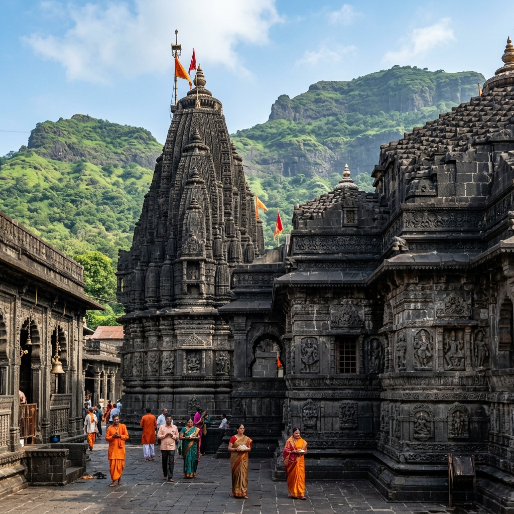
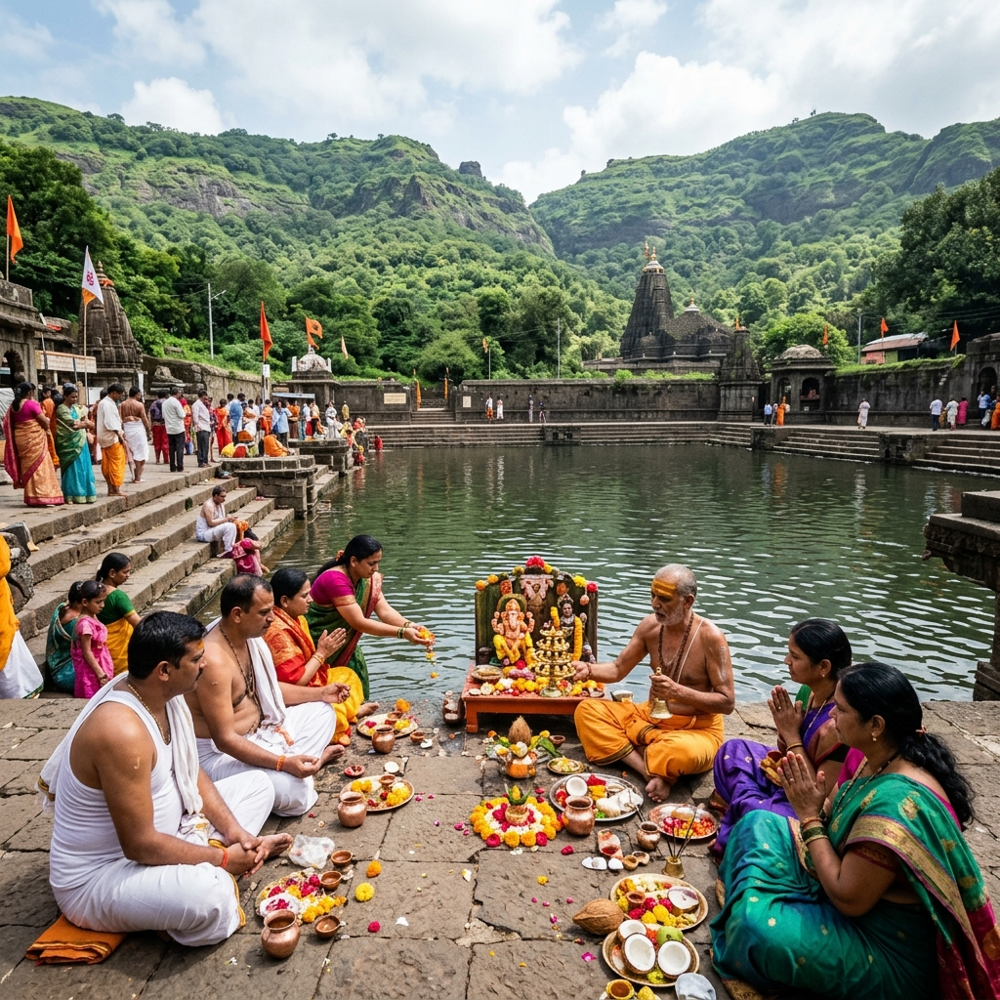
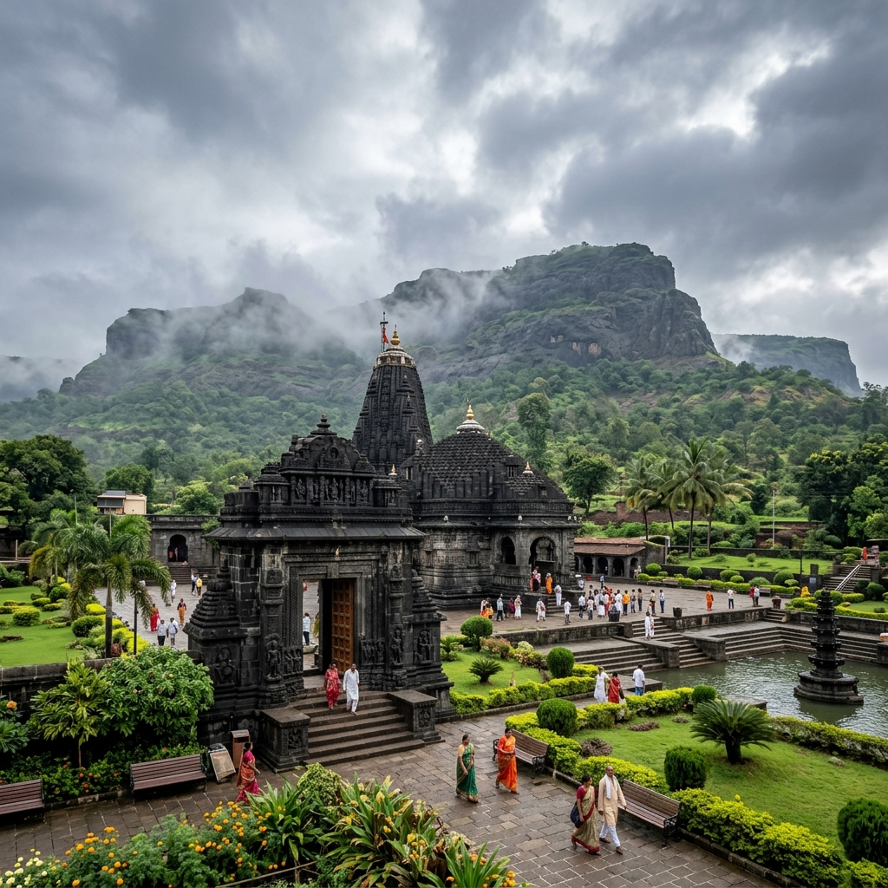

About Temple
Visiting Trimbakeshwar Temple feels deeply spiritual and peaceful, especially if you are looking for a place where devotion and nature come together. Located near the Brahmagiri hills, the surroundings are calm, slightly misty, and refreshing, which makes the overall experience more meaningful. It is not just a temple visit, but a place where you feel connected to something ancient and powerful. Many people come here not only for darshan but also for rituals and spiritual practices.
Misty Hills
Brahmagiri Base
Spiritual Energy
Deeply Connected

History & Significance
Trimbakeshwar Temple is one of the twelve Jyotirlingas of Lord Shiva, making it highly important in Hindu belief. It is also the origin point of the Godavari River, which adds to its spiritual significance. The temple has been a center for religious rituals for centuries, especially for performing ceremonies related to ancestors like Narayan Nagbali and Kalsarp Dosh puja. Its connection with both mythology and ritual practices makes it one of the most respected temples in Maharashtra.
Jyotirlinga
1 of 12 Holy Sites
Godavari Source
River Origin
What Makes It Unique
Discover the unique factors that set Trimbakeshwar Temple apart from other shrines.


Travel Guide
Convenient ways to reach the temple from different parts of Maharashtra.
Option 1: Direct Drive
The temple is located about 30 km from Nashik and can be reached within 45–60 minutes by car. From Mumbai, it takes around 3–4 hours (~180 km), and from Pune around 5–6 hours.
Duration: 45-60 min from NashikOption 2: Railways & Local Transit
Nashik Road station is well-connected to major Indian cities. Taxis, cabs, and state transport buses are easily available outside the station to travel directly to Trimbak.
Rail Hub: Nashik Road StationOption 3: ST & Private Buses
State transport (MSRTC) buses run regularly between Nashik Central Bus Stand (CBS) and Trimbak every 15-20 minutes, offering highly affordable transit.
Essential Information
Important details regarding timings, queues, and ideal visiting slots.
Timings & Crowds
Opens at 5:30 AM and closes around 9:00 PM. Mondays, festivals, and weekends witness huge crowds; early morning is the best slot for peaceful darshan.
Entry & Rituals
General entry for darshan is free. Separate charges apply for conducting specialized rituals, poojas, or quick-entry passes managed by the trust.
Best Time to Visit
October to March offers pleasant cool weather. Monsoons are extremely beautiful with misty green hill backdrops, but can get quite crowded.
Location & Coordinates
Trimbak town near Nashik, base of Brahmagiri hills, Maharashtra, India